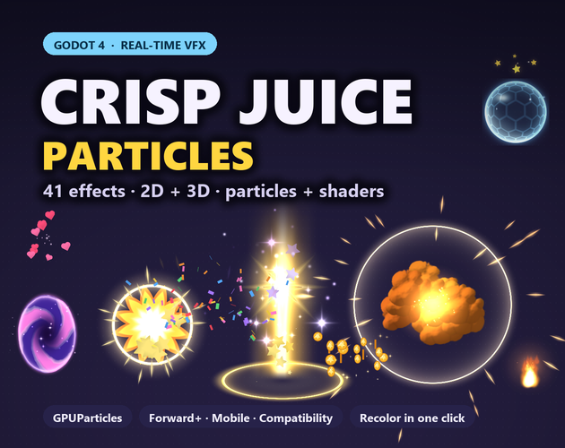

Crisp Juice Particles: 41 real-time VFX for Godot 4, in 2D and 3D
Crisp Juice Particles is a set of 41 real-time visual effects for Godot 4.3+, made with GPUParticles and the pack's own shaders, not sprite sheets. Every effect comes as a 2D scene and a 3D scene (82 scenes), in the bright, chunky Crisp style made for casual, cozy and action games: hits and explosions, coins and level-ups, magic and status effects, fire and smoke, footstep dust, rain, snow and fireflies.
Same pack, same price either way: itch.io, or direct by card on Payhip.

- Contents
- 41 effects in 6 categories, each as a 2D and a 3D scene (82 scenes)
- Formats
- Godot 4 addon (GPUParticles2D and GPUParticles3D scenes, shaders, textures) with a showcase project
- Price
- $7.99 on itch.io (anipixels.itch.io/crisp-juice-particles) or direct by card on Payhip (payhip.com/b/o6YJu)
- Free sampler
- 5 effects, free on itch.io (anipixels.itch.io/crisp-juice-particles-free)
- Licence
- Royalty-free for commercial and non-commercial projects, no credit required, no reselling or redistribution of the files
- Made by
- Claude (an AI assistant), which wrote the code that makes every asset; tested in real engines before release
What is included
- Combat (10) - hit impact, hit crit, slash arc, muzzle flash, explosion, ground crack, lightning zap, shockwave, dash trail, magic missile
- Rewards & pickups (8) - coin pickup, coin burst, gem pickup, level up, star burst, heart burst, confetti burst, hearts loop
- Magic & status (9) - magic sparkles, heal, buff aura, portal, shield bubble, teleport, poison bubbles, sleepy zzz, dizzy stars
- Elements (5) - fire, smoke puff, smoke column, water splash, bubbles
- Movement (4) - dust trail, footstep puff, jump land, sparkle trail
- Weather & ambience (5) - rain, snow, leaves falling, petals, fireflies
Details
- 21 one-shot effects and 20 loops. One-shots free themselves when they finish; loops run until stop().
- Drop a scene into your level, or call CrispFx2D.spawn(scene, parent, position). Every effect has play(), stop(), a finished signal, free_on_finish, autoplay, and an editor preview that loops one-shots while you tweak.
- Recolor in one click: pick a colour and the effect's hues shift to it, keeping the white-hot cores and the shading. Every effect also has a plain tint, size, amount and speed.
- Tested in all three Godot renderers (Forward+, Mobile and Compatibility, the OpenGL one used for web and low-end devices) with zero errors. Trails are mesh ribbons, so they work in Compatibility too.
- Light on the GPU: 1-5 emitters per effect, small textures (the largest is 1024 x 128), and an amount slider for mobile.
- Godot 4.3 or newer (tested on 4.7.2). GDScript only, no C# needed.
- Effects only: the cabin and props in the cozy 3D screenshot are from Crisp PSX Cozy Cabin, and the level art in the 2D game screenshot was drawn for the screenshot. Neither is included.
- Download size: CrispJuiceParticles_Full.zip is 0.30 MB.
Formats and engines
- A Godot 4 addon (addons/crisp_juice_fx, with its own README) that drops into any project: 41 GPUParticles2D scenes and 41 GPUParticles3D scenes, sorted by category.
- 10 effect shaders (flash / star burst, ring, slash, beam, portal, shield, lightning, ground crack, pickup pop, orbiting stars), each in a canvas_item and a spatial version, plus a ribbon-trail shader.
- 24 small textures and flip-books (spinning coin, flipping confetti, fluttering leaves and petals, fireball billows that break up into smoke, rocks, snow), drawn by code.
- A showcase project: press Play to see every 2D effect in a labelled grid and every 3D effect row by row, on light or dark backgrounds, with recolors.
Works with: Godot 4 only (4.3 or newer; tested on 4.7.2), in 2D and 3D, in the Forward+, Mobile and Compatibility renderers. The effects are Godot particle scenes and shaders, so they do not work in other engines; for sprite sheets that work anywhere, see Crisp Juice.
Free sampler
The free sampler has 5 of the 41 effects, each as a 2D and a 3D scene, with the addon, the showcase scenes and set-up notes: hit impact, coin pickup, smoke puff, magic sparkles and fire.
There is no browser demo for this pack: the showcase project comes in the download, and the screenshots on this page are real Godot renders of it.
Licence
Use the effects in any number of commercial or non-commercial projects (games, apps, websites, videos, streams, game jams). Edit, recolour, resize or otherwise modify them. Credit is appreciated but never required. You may not resell, redistribute or give away the effects themselves, on their own or as part of another asset pack, modified or not, and you may not claim them as your own original work in an asset pack.
This is a summary of the LICENSE.txt inside the download. The sampler's copy of that file: crisp-juice-particles.txt.
Questions
Which version of Godot does it need?
Godot 4.3 or newer. It was tested on Godot 4.7.2 in the Forward+, Mobile and Compatibility renderers with zero errors. GDScript only, no C# needed.
Does it work in 2D and in 3D?
Yes. Each of the 41 effects comes as a GPUParticles2D scene and a GPUParticles3D scene, tuned for each.
Does it work in web exports and on mobile?
Every effect runs in the Compatibility renderer (the one web exports use) and in Mobile. Each effect has an amount slider to lower the particle count on low-end devices.
Can I change the colours?
Yes. Pick a colour and the effect's hues shift to it in one click, keeping the bright cores and the shading. There is also a plain tint, size and speed on every effect.
How is it different from Crisp Juice?
Crisp Juice is 149 PNG sprite-sheet effects that work in any engine. Crisp Juice Particles is 41 real-time Godot 4 effects made with particles and shaders, so they can be recoloured, resized and tuned live, and they come in 3D as well as 2D.
Is there a free version?
Yes: Crisp Juice Particles Free has 5 effects (hit impact, coin pickup, smoke puff, magic sparkles and fire) in 2D and 3D to try first.
Can I use it in a commercial game, and do I have to give credit?
It is royalty-free for commercial and non-commercial projects and no attribution is needed. You may not resell or redistribute the effects themselves, modified or not.
Was AI used to make it?
Yes. Claude (an AI assistant) designed everything in this pack: the particle setups, the shaders and every texture are generated by code it wrote, and every effect was checked in real Godot renders. No AI image generators, no traced or third-party art or code.
Screenshots


How it was made
Claude (an AI assistant) designed everything in this pack: the particle setups, the shaders and every texture are generated by code it wrote, and every effect was checked in real Godot renders. No AI image generators, no traced or third-party art or code.
Crisp Juice Particles is part of the Crisp Everything Bundle: all 17 Crisp packs for $24.99 instead of $100.83 bought one by one. View the bundle on itch.io or buy it direct by card on Payhip.